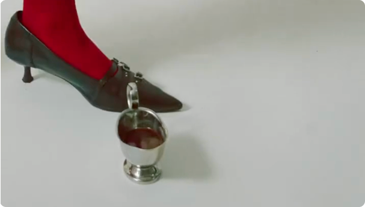
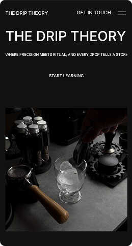
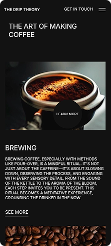
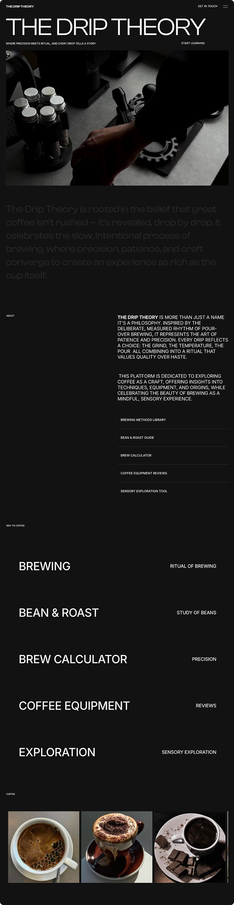
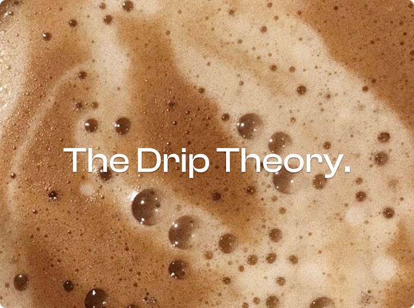

WEB DESIGN × DIGITAL EXPERIENCE
The Drip Theory
Turning coffee culture into an immersive digital experience.
TL;DR
The Drip Theory is a web experience built around the culture, process, and experience of coffee.
Rather than designing a conventional coffee website focused only on products, I explored how storytelling, visual hierarchy, interaction, and editorial layouts could make the experience itself feel as engaging as the subject.
I worked across the information structure, visual direction, interaction design, and responsive web experience.
Background
Coffee is more than what's in the cup.
Coffee has a story behind it, where it comes from, how it is prepared, how it tastes, and the rituals built around it.
Most coffee websites prioritize products and transactions.
The Drip Theory explores a more editorial and immersive approach to presenting coffee online.
Problem
How do you make a website about coffee feel like an experience?
A product catalogue can tell users what exists.
It doesn't necessarily make them curious.
The challenge was to create a website where visual storytelling and interaction could guide discovery, rather than making users simply browse a list of products.
Process
Designing the experience
-
Building the visual narrative
The website was structured around storytelling rather than a conventional sequence of product grids.
Typography, imagery, whitespace, and composition work together to create an editorial rhythm.
-
Designing for discovery
Instead of presenting everything at once, the experience progressively reveals information.
The user moves through the content naturally, allowing the website to create curiosity before asking for action.
-
Making interaction part of the story
Interactions aren't treated as decoration.
Motion, transitions, scrolling, and hover states help establish hierarchy and create a stronger relationship between the user and the content.
-
Balancing visual impact with usability
A highly visual website can easily become difficult to navigate.
The challenge was to keep the experience expressive while maintaining clear navigation, readable content, and obvious interaction points.


Final Product
FINAL EXPERIENCE
01 Landing experience
The opening establishes the visual language and immediately communicates what The Drip Theory is about.
02 Exploration
Users can move deeper into the coffee experience through structured content and visual storytelling.
03 Content / Product
Information is presented through a combination of editorial layouts, imagery, typography, and interaction.
04 Interaction
Motion and transitions create continuity between sections rather than treating every section as a separate page.

Reflections
Web design is more than arranging sections.
The biggest challenge was deciding how the user should move through the story, not simply what each section should contain.
Visual storytelling needs structure.
The more expressive the interface became, the more important hierarchy and navigation became.
